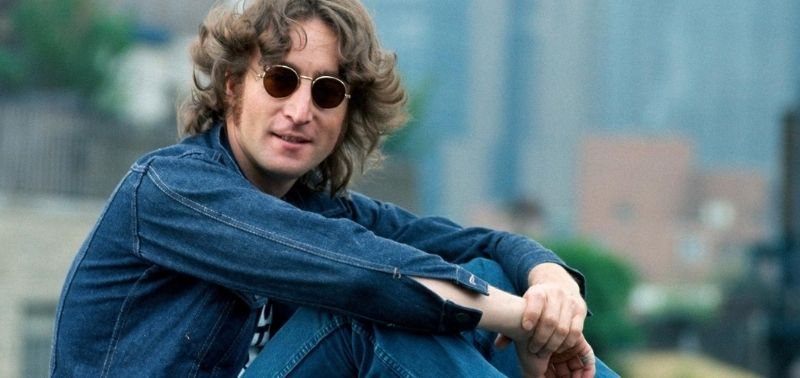

John Lennon
Introdução
John Winston Ono Lennon (nascido John Winston Lennon ; 9 de outubro de 1940 - 8 de dezembro de 1980) foi um cantor, compositor, músico e ativista pela paz inglês que alcançou fama mundial como fundador, co-compositor, co-vocalista e ritmo guitarrista dos Beatles . O trabalho de Lennon foi caracterizado pela natureza rebelde e sagacidade mordaz de sua música, escrita e desenhos, no filme e em entrevistas. Sua parceria de composição com Paul McCartney continua sendo a mais bem-sucedida da história.
Biografia
Nascido em Liverpool , Lennon se envolveu na mania do skiffle quando adolescente. Em 1956, ele formou o The Quarrymen , que evoluiu para os Beatles em 1960. Às vezes chamado de "o inteligente Beatle", ele foi inicialmente o líder de fato do grupo, papel gradualmente cedido a McCartney. Lennon logo expandiu seu trabalho para outras mídias participando de vários filmes, incluindo How I Won the War , e sendo autor de In His Own Write e A Spaniard in the Works , ambas coleções de escritos sem sentido e desenhos de linha. Começando com " All You Need Is Love ", suas canções foram adotadas como hinos pelo movimento anti-guerra e o maiorcontracultura dos anos 1960 . Em 1969, ele começou a Plastic Ono Band com sua segunda esposa, a artista multimídia Yoko Ono , realizou a manifestação anti-guerra de duas semanas Bed-ins for Peace e deixou os Beatles para embarcar em carreira solo.
Entre 1968 e 1972, Lennon e Ono colaboraram em muitos trabalhos, incluindo uma trilogia de álbuns de vanguarda , vários outros filmes, sua estreia solo John Lennon/Plastic Ono Band e os 10 melhores singles internacionais " Give Peace a Chance ", " Instant Karma! ”, “ Imagine ” e “ Happy Xmas (War Is Over) ”. Mudando-se para a cidade de Nova York em 1971, suas críticas à Guerra do Vietnã resultaram em uma tentativa de deportação de três anos pelo governo Nixon . Lennon e Ono se separaram de 1973 a 1975, período durante o qual ele produziu o álbum de Harry Nilsson , Pussy Cats .. Ele também teve colaborações no topo das paradas com Elton John (" Whatever Gets You thru the Night ") e David Bowie (" Fame "). Após um hiato de cinco anos, Lennon voltou à música em 1980 com a colaboração de Ono, Double Fantasy . Ele foi assassinado por um fã dos Beatles, Mark David Chapman , três semanas após o lançamento do álbum.
Curiosidades
O primeiro instrumento que John Lennon aprendeu a tocar foi o banjo, ensinado por sua mãe, Julia.
Em 1966, ele causou polêmica ao afirmar, em entrevista à revista “Datebook”, que os Beatles eram mais famosos que Jesus Cristo.
No disco “Two Virgins” (1968), John Lennon e Yoko Ono aparecem nus na capa.
O disco solo mais famoso do cantor é “Imagine”, lançado em 1971.
No dia 8 de dezembro de 1980, John Lennon foi assassinado a tiros pelo fã Mark Chapman, em Nova York. Chapman confessou o crime quase um ano depois, em 22 de junho de 1981.
Um chinês pagou 4 mil dólares por uma mecha do cabelo de John Lennon em um leilão organizado pela Feira de Discos do Colecionador de Girona, na Espanha. O “souvenir” foi dado pelo cantor a um fã no dia 26 de agosto de 1964, em um show em Denver, Estados Unidos.
A primeira mulher de Lennon, Cynthia Powell, publicou em 2005 uma biografia sobre o cantor. Ela revelou que o Beatle era violento e tinha sérias crises de ciúme, durante as quais costumava agredi-la. Em um dos trechos da obra, conta que foi espancada pelo músico no banheiro da escola, porque tinha sido vista dançando com um colega de classe. O casal ficou junto de 1962 a 1969, e teve um filho junto, Julian.
Durante a viagem dos Beatles para a Índia, em 1968, o cantor esqueceu Cynthia em uma estação de trem.
A capa da “Rolling Stone” em que John Lennon aparece nu, em posição fetal, abraçado sua esposa Yoko, foi eleita a melhor capa de revista norte-americana. A edição saiu nas bancas em 1981. A seleção, feita pela Sociedade Americana de Editores de Revistas, avaliou 450 capas publicadas pela “Time”, “Newsweek”, “Esquire” e “National Geographic”, entre outras.
A música “Imagine”, de John Lennon, é a mais rejeitada em funerais britânicos. Os padres têm o direito de barrar a execução de músicas inapropriadas. “Imagine” é geralmente contestada pelo verso “Imagine there’s no heaven” (“imagine que não exista o paraíso”).